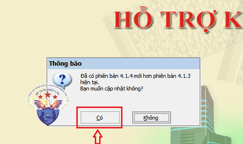
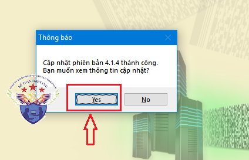
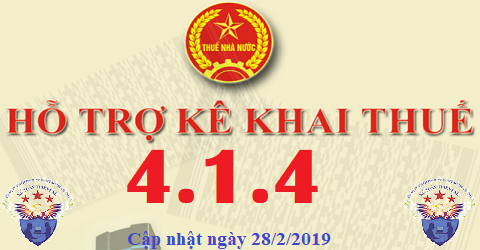

Phần mềm HTKK 4.1.4 mới nhất 28/2/2019 của Tổng cục thuế. Đây là phần mềm hỗ trợ kê khai thuế HTKK 4.1.4 mới nhất 2019. Download phần mềm HTKK 4.1.4 miễn phí tại đây.
Ngày 28/02/2019 Tổng cục thuế Thông báo về việc Nâng cấp ứng dụng Hỗ trợ kê khai (HTKK) theo kiến trúc và công nghệ mới phiên bản 4.1.4.
TỔNG CỤC THUẾ THÔNG BÁO
V/v: Triển khai ứng dụng Hỗ trợ kê khai (HTKK) phiên bản 4.1.4 đáp ứng yêu cầu nghiệp vụ theo Thông tư số 334/2016/TT-BTC ngày 27/12/2016 (đối với bộ báo cáo tài chính dành cho công ty chứng khoán)
V/v: Triển khai ứng dụng Hỗ trợ kê khai (HTKK) phiên bản 4.1.4 đáp ứng yêu cầu nghiệp vụ theo Thông tư số 334/2016/TT-BTC ngày 27/12/2016 (đối với bộ báo cáo tài chính dành cho công ty chứng khoán)
Tổng cục Thuế thông báo nâng cấp ứng dụng Hỗ trợ kê khai (HTKK) phiên bản 4.1.4 đáp ứng yêu cầu nghiệp vụ theo Thông tư số 334/2016/TT-BTC ngày 27/12/2016 về việc sửa đổi, bổ sung và thay thế phụ lục 02 và 04 của Thông tư 210/2014/TT-BTC ngày 30/12/2014 của Bộ Tài chính hướng dẫn kế toán áp dụng đối với công ty chứng khoán đồng thời nâng cấp một số lỗi và yêu cầu nghiệp vụ phát sinh khi triển khai phiên bản 4.1.3, cụ thể như sau:
-------------------------------------------------------------------
1. Nâng cấp ứng dụng bổ sung mẫu biểu và các yêu cầu nghiệp vụ phát sinh:
- Nâng cấp ứng dụng bổ sung chức năng lập Báo cáo tài chính theo Thông tư số 334/2016/TT-BTC: Hỗ trợ nhập, xóa, sửa, in, nhập lại, kết xuất XML, kết xuất Excel, tải báo cáo từ XML, tra cứu hướng dẫn kê khai từng chỉ tiêu cho các bộ BCTC bao gồm:
+ Bộ báo cáo tài chính năm
+ Bộ báo cáo tài chính hợp nhất
+ Bộ báo cáo tài chính giữa niên độ
- Cập nhật danh mục địa bàn hành chính
+ Cập nhật xã Đồng Lộc thành Thị trấn Đồng Lộc – Huyện Can Lộc – Tỉnh Hà Tĩnh.
+ Cập nhật Thị xã Đồng Xoài thành Thành phố Đồng Xoài – Tỉnh Bình Phước.
- Nâng cấp chức năng Lập Báo cáo sử dụng hóa đơn (áp dụng đối với cá nhân nộp thuế theo phương pháp khoán) (01/BC-SDHD-CNKD): Cập nhật cho phép sửa cột thuế GTGT tại mục I - phần B, nếu sửa khác giá trị ứng dụng hỗ trợ tự động tính thì hiển thị cảnh báo vàng.
------------------------------------------------------------------
2. Cập nhật một số lỗi của ứng dụng HTKK phiên bản 4.1.3
- Chức năng Tổng hợp KHBS tờ khai thuế nhà thầu nước ngoài (01/NTNN): Cập nhật sửa lỗi tổng hợp Số điều chỉnh của chỉ tiêu “Thuế TNDN phải nộp”.
- Chức năng lập Báo cáo tình hình sử dụng hóa đơn (BC26/AC): Cập nhật nút chức năng ‘Tải bảng kê’ trên ứng dụng.
- Chức năng lập báo cáo tài chính năm theo thông tư số 200/2014/TT-BTC: Cập nhật sửa lỗi xử lý dữ liệu tại chỉ tiêu 316 – Phải trả nội bộ ngắn hạn thuộc bảng Cân đối kế toán: cho phép nhập âm, dương.
- Chức năng kê khai Tờ khai quyết toán thuế thu nhập cá nhân (02/QTT-TNCN):
+ Cập nhật chức năng kê khai Tờ khai quyết toán thuế thu nhập cá nhân (02/QTT-TNCN):
+ Cập nhật sửa lỗi ràng buộc cột Từ tháng – đến tháng tại các mục I, II – Bảng kê giảm trừ gia cảnh cho người phụ thuộc (02-1BK-QTT-TNCN) cho phép nhập Từ tháng <= đến tháng.
------------------------------------------------------------
Bắt đầu từ ngày 01/03/2019, khi lập hồ sơ khai thuế, tổ chức, cá nhân nộp thuế trên phạm vi toàn quốc sẽ sử dụng ứng dụng HTKK 4.1.4 để kê khai thay cho các phiên bản trước đây.
-----------------------------------------------------------
Download Phần mềm HTKK 4.1.4 tại đây:

Để cài đặt được HTKK 4.1.4, máy tính của NNT cần đáp ứng thông số sau:
- Hệ điều hành WinXP (SP2, SP3), Win 7 trở lên… (không hỗ trợ hệ điều hành iOS, Mac).
- Máy tính có cài .NET Framework 3.5 trở lên (có thể tải bộ cài .NET Framework 3.5 tại đây).
- Nếu máy tính sử dụng hệ điều hành Win 7 trở lên không phải cài đặt .NET Framework 3.5 mà chỉ cần kích hoạt .NET Framework 3.5 đã tích hợp sẵn theo tài liệu hướng dẫn cài đặt tại đây
- Hệ điều hành WinXP (SP2, SP3), Win 7 trở lên… (không hỗ trợ hệ điều hành iOS, Mac).
- Máy tính có cài .NET Framework 3.5 trở lên (có thể tải bộ cài .NET Framework 3.5 tại đây).
- Nếu máy tính sử dụng hệ điều hành Win 7 trở lên không phải cài đặt .NET Framework 3.5 mà chỉ cần kích hoạt .NET Framework 3.5 đã tích hợp sẵn theo tài liệu hướng dẫn cài đặt tại đây
-----------------------------------------------------------------------------------------------
- Mọi phản ánh, góp ý của tổ chức, cá nhân nộp thuế được gửi đến cơ quan Thuế theo các số điện thoại, hộp thư điện tử hỗ trợ NNT về ứng dụng HTKK do cơ quan Thuế cung cấp.
Tổng cục Thuế trân trọng thông báo./.
-----------------------------------------------------------------------
Trường hợp: Máy tính các bạn đã cài phần mềm HTKK 4.1.3 rồi -> Các bạn chỉ cần Bật phần mềm HTKK 4.1.3 đó lên -> Phần mềm sẽ hiển thị Thông báo cập nhật lên Phần mềm HTKK 4.1.4 -> Các bạn bấm nút "Có"

-> Tiếp đó đợi phần mềm chạy cập nhật là xong nhé:

Như vậy là các bạn đã nâng cấp xong Phần mềm HTKK 4.1.4 nhé
-------------------------------------------------------------------------
